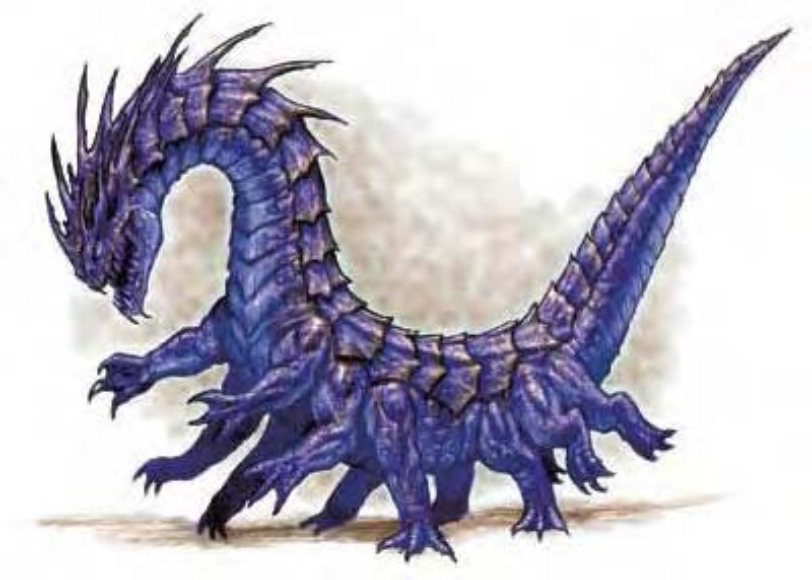

乍看像穿着防具的大蛇，以高速滑行地面。在未减速的状态下，该生物从蛇状身体展开十数只脚，朝你奔跑冲刺。
青足龙蛇是蛇形怪物，可像蛇一样或以数十只脚快速移动。青足龙蛇约40英尺长，4000磅重。青足龙蛇可以任意把脚收起贴近细长的躯体，像蛇一样地滑行前进。其颜色介于海蓝色至深蓝色，并有灰棕色环纹，腹部则为淡蓝色。头部长着两只倒竖的大角，看似危险，但其实并非用于战斗，而是用于整理鳞片。
青足龙蛇不喜欢龙类生物，无法和平共存。若有龙进入青足龙蛇的领地，青足龙蛇会尽其所能驱赶。若驱赶失败，即离开另觅新家。青足龙蛇不会故意进入龙的领地。青足龙蛇通晓通用语。
| 资料栏位 | 青足龙蛇 (Behir) 超大型魔法兽 |
|---|---|
| 生命骰 | 9d10+45 (94HP) |
| 先攻 | +1 |
| 速度 | 40英尺 (8格)、攀爬15英尺 |
| 防御等级 | 20 (-2体型、+1敏捷、+11天生)、接触9、措手不及19 |
| 基本攻击/擒抱 | +9 / +25 |
| 攻击 | 啮咬+15近战 (2d4+12) |
| 全力攻击 | 啮咬+15近战 (2d4+12) |
| 占用/触及 | 15英尺 / 10英尺 |
| 特殊攻击 | 喷吐攻击、紧勒2d8+8、精通擒抱、耙抓1d4+4、生吞 |
| 特殊能力 | 不会被阻绊、黑暗视觉60英尺、对电击免疫、昏暗视觉、灵敏嗅觉 |
| 豁免 | 强韧+11、反射+7、意志+5 |
| 属性 | 力量26、敏捷13、体质21、智力7、感知14、魅力12 |
| 技能 | 攀爬+16、躲藏+5、聆听+4、侦察+4、生存+2 |
| 专长 | 警觉、顺势斩、猛力攻击、追踪 |
| 环境 | 热带丘陵 |
| 组织 | 单独或成双 |
| 挑战级数 | 8 |
| 宝藏 | 标准 |
| 阵营 | 偏向绝对中立 |
| 进化 | 10-13HD (超大型) ; 14-27HD (巨型) |
| 等级修正值 | ― |
青足龙蛇倾向先以啮咬与擒抱攻击对手，然后再紧勒或生吞。只有在以躯体缠住对手的状况下，青足龙蛇才能使用爪抓。若遭大量敌人围困，青足龙蛇会采取喷吐攻击。
喷吐攻击（超自然）：20英尺直线，每10轮可使用一次，造成7d6点电击伤害，通过反射检定（DC=19）则伤害减半。豁免DC的调整值与体质调整值相同。
紧勒（特异）：一旦通过擒抱检定，青足龙蛇即可造成2d8+8点伤害。对被擒的敌人还可进行六次耙抓。
精通擒抱（特异）：当青足龙蛇啮咬到任何体型的对手时，即可利用即时动作进行啮咬攻击（视为擒抱），且不会引发对方借机攻击。如果啮咬成功，则可定住对手进行“紧勒”或在次轮生吞对手。
耙抓（特异）：攻击加值+15近战、伤害1d4+4。
生吞（特异）：如果对手的体型为中型或以下，且被青足龙蛇擒抱，则一旦青足龙蛇通过擒抱检定，就可将对方生吞下去。生吞对手后的青足龙蛇可在次轮使用“顺势斩”专长啮咬及啮咬其他对手。
生吞之后，青足龙蛇的食道每轮会造成对手2d8+8点敲击伤害及8点强酸伤害。被生吞的对手可试着用轻型挥砍或穿刺武器来打开一条生路，在对食道（AC=15）造成25点以上伤害后，可破开一道足以逃脱的缺口。一旦一个被生吞的生物逃脱，则肌肉运动会将这道缺口封起，其他被生吞的生物必须另行逃脱。
青足龙蛇的食道可容纳2个中型、8个小型、32个超小型或128个微型或更小的生物。
技能：青足龙蛇在进行“攀爬”检定时具有+8种族加值。即使被冲撞或受威胁，他们在进行“攀爬”检定时都可以随时取10。